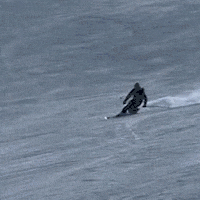

SpeedNet: Learning the Speediness in Videos
Supplementary Material
- Adaptive Speedup Results (Section 5.3)
- Video Retrieval Results (Section 5.4.2)
- Visualization of Salient Space-time Regions (Section 5.5 and Figure 8)
- Spatially-varying Speediness (Section 5.5 and Figure 9)
- Additional SpeedNet Prediction Results (Section 5.1.1)
- Predicting Normal Speed and Slow Motion Segments (Section 5.2 and Figure 1)
- Speedup is not Motion Magnitude (Section 5.1.2 and Figure 2)
Adaptive Speedup Results
For each video, we compare constant (uniform) 2x speedup (left) with our adaptive speedup result (right) as detailed in Section 5.3.
These are the same 5 pairs of videos shown in our user study (Section 5.3, Figure 6).
Below each sped-up video we show its corresponding speedup curve.
For the video on the right, the plot shows the adaptive speedup score over time as explained in section 4.2.
Note that each pair of constant and adaptive sped-up videos have the exact same duration (length).
"100m"(original video) |
|
| Constant speedup | Adaptive speedup (our result) |
"Pool"(original video) |
|
| Constant speedup | Adaptive speedup (our result) |
"High Jump"(original video) |
|
| Constant speedup | Adaptive speedup (our result) |
"Dancing"(original video) |
|
| Constant speedup | Adaptive speedup (our result) |
"Floor is Lava"(original video) |
|
| Constant speedup | Adaptive speedup (our result) |
Video Retrieval Results
The left column shows a query clip, and the right three columns show the clips with the closest embeddings, from left (closest) to right (3rd-closest).
In the top row, the retrieval is done from clips taken from further along in the same video.
In the subsequent rows, the results are retrieved from a database of video clips spanning the entire UCF101 training set.
Note that the embeddings focus more on the type of movement than the action class. For example, the girl in the second row (rightmost column) is making similar back/forth/up/down motions with her hand as the hand drummer in the query clip.
Additional video retrieval results from a diverse set of queries can be found here.
| Query clip | Retrieved top-3 results within a video | |||
| Query clip | Retrieved top-3 results across videos (UCF101) | |||
 |
 | |||
 |
||||
 |
 |
|||
Visualization of Salient Space-time Regions
Which space-time regions contribute the most to our speediness predictions? The following are CAM visualizations as detailed in Sec. 5.5 for a video of a gymnast, parkour and rock climbing.
Spatially-varying speediness
Space-time visualizations for video segments from "Memory Eleven", where one part of the frame is played in slow motion while the rest of the frame is played at normal speed. Left column: the input video clips. Right column: our predicted speediness, from blue (normal speed), to red (slow motion). See Section 5.5 in the paper for details on how the visualizations are computed.
| Input video | Visualization of predicted speediness |
Additional SpeedNet Prediction Results
SpeedNet prediction probabilites on videos played at 1x and 2x speed (supplements Figure 4 in the paper). The probabilites for normal speed (1x) are shown in blue and for sped up (2x) in red. On the y axis, the probability ragnes from 0 (normal speed) to 1 (sped up).
"Gymnast" |
|
| SpeedNet score for 1x video | SpeedNet score for 2x video |
"Rock Climbing" |
|
| SpeedNet score for 1x video | SpeedNet score for 2x video |
Predicting Normal Speed and Slow Motion Segments
In the following videos, parts of the video are played at normal speed and parts are in slow motion. Our model accurately predicts the parts played at normal speed and the parts that are slowed down. See further details in Section 5.2 in the paper and the supplemental document.
"Dancer" |
"Tap" |
Speediness vs. Motion Magnitude
Supplementing Figure 2 in the paper. We consider a video of a person walking at normal speed close and far from the camera. The SpeedNet predcitions (probability of the video playing at normal speed) are shown alongside the magnitude of motions in the video (mean magnitude of optical flow vectors per frame, over time). While motion magnitude varies significantly between a person walking close or far from the camera, our model correctly classifies all such regions as normal speed for a video played at 1x, and as sped up for a video played at 2x.
Speediness |
Motion magnitude |
||
From |
|||
From |